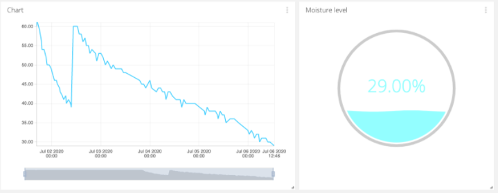

Welcome
On this website I have collected some projects I have done. Feel free to have a look around, and if you would like to know more, do not hesitate to contact me.
On this website I have collected some projects I have done. Feel free to have a look around, and if you would like to know more, do not hesitate to contact me.

I have been working part time during the spring and fall in 2021, as well as full time during the summer. My tasks have mostly been
preprocessing data and training artificial neural networks for object detection. I planned and structured my own project for the summer and finished by presenting the
results to the department. Now I work 20% with preprocessing data and incorporating it into the framwork being used.
As a part of a course in Artificial Intelligence an AI that would always win against a server was set up. Minimax search was used in combination with alpha-beta pruning
where each move was evaluated on a new branch in a decision tree, and if it was clear that the branch did not contribute to a better final score it was pruned in order to reduce computational time and cost.
The heuristic node evaluation was made by implementing a scoring system that gave the highest score for 4 in a row, a lower score for 3 in a row, and even lower for 2 in a row. The same was implemented for the moves
of the opponent, but giving negative scores. The minimax implementation was done recursively.
As part of a course in Image Analysis we built and tested a small system for optical character recognition in Matlab. The inputs
were different images of handwritten numbers, and our task was to segment the images to individual numbers, find good features to separate the numbers
and finally to correctly classify the numbers. The assignment was to achieve an accuracy higher than 60% for the easier images, and higher than 50% for the more
complicated images.
In this project a sudoku solver was created using Java. The program was made using recursive technique and the user interface was written in Java Swing.

A soil moisture sensor was connected to a pycom expansion board that was programmed to transmit data over a wireless protocol to a platform. The data was then analysed and visualised, and the user was notified when humitidity became too low.
TUTORIALIn this project the Finite Element Method was used to investigate the temperature distribution inside an integrated circuit. Expansion of the material due to the temperature increase and the stress caused by the expansion was also investigated. These calculations were done using MATLAB.
I am currently studying my fourth year of Engineering physics at Lund University. I have chosen to specialise in Machine Learning, but I am interested
in exploring other fields connected to it as well. The reason I chose to study Engineering and later Machine Learning is that I am very curious and
love to discover how the world works. I am fascinated by how technology affects the everyday life, and its capability to improve the lives of so many.
In my professional life I would love to be part in developing technology that somehow makes a difference in improving people's lives.
As a person I am adventurous and I love to spend time outdoors, doing activities like trail running, hiking or surfing. I also enjoy long dinners with my friends,
reading good books and to grow vegetables on my balcony.